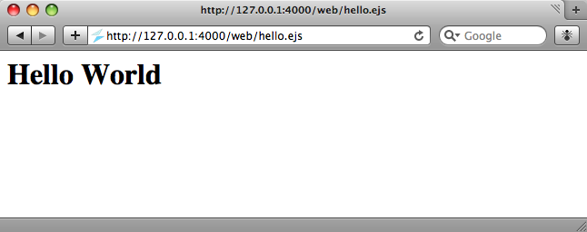
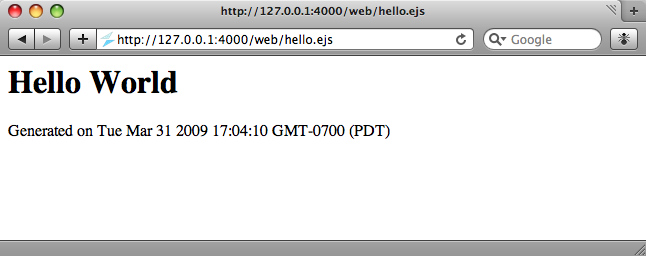
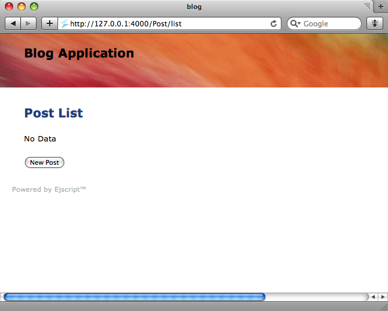
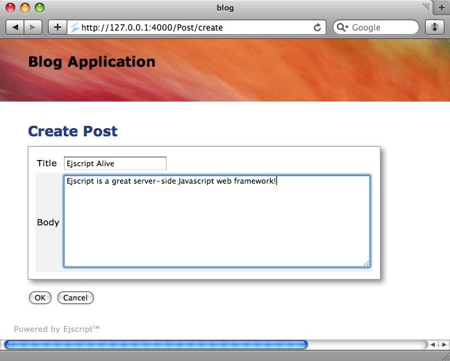
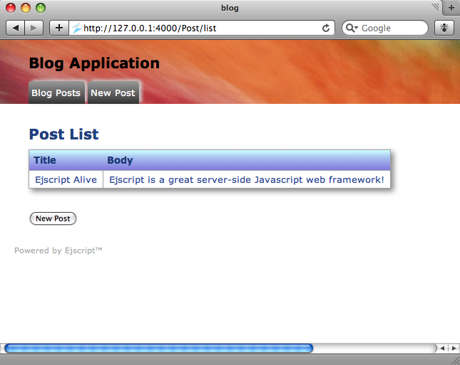

Quick Nav
- Blog App
- Creating a New App
- Run the App
- Hello World
- Dynamic Content
- Scaffolds
- Create New Posts
- Edit the Home Page
- Changing the Layout
- Validations
- Learn More
See Also
Ejscript Web Framework Tour
This quick tour of the Ejscript Web Framework provides an overview of the web framework and how to use it for your web applications.
First make sure you have read the Quick Start and the Ejscript Language Tour, and that you have Ejscript installed on your system so you can type along as you go. This web framework tour will work with the Ejscript Command Shell and the web framework mvc application generator to run scripts.
A Demonstration Blog Application
Command sessions are presented in blue boxes. Output from the system is highlighted in yellow. Bold yellow is used to highlight some output of specific interest.
Creating a New Application
To create a new Ejscript application, you will use mvc, the Ejscript application generator program. Type the following mvc command in a command terminal window:
home> mvc -v generate app blog [CREATED] Directory: blog [CREATED] Directory: cache [CREATED] Directory: controllers [CREATED] Directory: db [CREATED] Directory: db/migrations [CREATED] Directory: models [CREATED] Directory: src [CREATED] Directory: views [CREATED] Directory: views/Base [CREATED] Directory: layouts [CREATED] Directory: static [CREATED] Directory: static/images [CREATED] Directory: static/themes [CREATED] start.es: "start.es" [CREATED] App: "src/App.es" [CREATED] Config File: "ejsrc" [CREATED] Layout: "layouts/default.ejs" [CREATED] HomePage: "views/Base/index.ejs" [CREATED] Static web page: "static/images/banner.jpg" [CREATED] Static web page: "static/images/favicon.ico" [CREATED] Static web page: "static/images/splash.jpg" [CREATED] Static web page: "static/js" [CREATED] Static web page: "static/js/jquery.ejs.min.js" [CREATED] Static web page: "static/js/jquery.min.js" [CREATED] Static web page: "static/js/jquery.simplemodal.min.js" [CREATED] Static web page: "static/layout.css" [CREATED] Static web page: "static/themes/default.css" [CREATED] BaseController: "controllers/Base.es" [CREATED] README: "README" [BUILD]: src/App.es controllers/Base.es Change directory into your application directory: blog Then run the web server via: "mvc run" and point your browser at: http://localhost::4000/ to view your app.
This simple command accomplished quite a bit. It first created a new directory called blog for the application, and then created subdirectories for various parts of the application. Initially, most of these directories are empty. They are used as your application grows.
The command also created an ejsrc configuration file. This allows you to define a database name, and set other configuration settings. The Ejscript web framework follows the "convention over configuration" philosophy popularized by Ruby on Rails. This means that Ejscript adopts certain conventions about where files and directories should be placed and about how names are used. If you work with these conventions, then you need to do little or no configuration. Things will just work.
Here are the most important directories:
| Name | Description |
|---|---|
| cache | Compiled views and web pages |
| controllers | Application controller classes |
| db | Database file and database initialization scripts |
| layouts | View layout template pages |
| models | Database model classes |
| src | Application source code classes |
| static | Static web pages |
| views | View web pages |
See the mvc command documentation for an explanation of the other generated directories.
Running your Application
You can immediately run your application after generation. Ejscript includes a built-in web server so you can run your application without needing to deploy to an external web server. The Ejscript built-in web server is based on the Appweb embedded web server which is a fast and compact server ideal for development and for production hosting. For more information about hosting Ejscript in web servers, read the Hosting document.
To run the web server:
mvc run
[RUN]: /usr/lib/ejs/appweb --home /usr/lib/ejs \
--ejs /:/var/www/blog/ --log /dev/tty:1
appweb: 1: Starting host named: "127.0.0.1:4000"
appweb: 1: HTTP services are ready (single-threaded)
Then enter localhost:4000 in your browser. You should see your first application home page.

Hello World
The next step is to create a simple "Hello World" web page. Ejscript web pages have an .ejs extension. Create a file called hello.ejs in the top-level directory with the following content:
<html> <body> <h1>Hello World</h1> </body>
To view the "Hello" web page in your browser, type in the following url: http://localhost:4000/hello.ejs.
Dynamic Content
While that was fun, the output is static and boring, so let's add some dynamic content. You can embed Ejscript expressions by including them inside a special Ejscript web page directive that will be executed and converted to HTML before being sent to the client. There are a variety of server-side Ejscript web page directives, the one you'll use first is: <%= expression %>.
To add the current date and time, modify the hello.ejs web page and add the highlighted line:
<html> <body> <h1>Hello World</h1> Generated on <%= Date() %> </body>
Now when you re-run the page, it will display the current date and time:
No Restart Require
Notice that you did not have to restart the web server, nor did you have to manually recompile the application. Rather, transparently in the background, the Ejscript web framework noticed that the hello.ejs web page has been modified and it re-parsed and compiled it into an Ejscript module, ready for execution.
You can also embed more complex Ejscript into our page, like:
<html>
<body>
<h3><% write("SERVER_SOFTWARE is " + host.software); %>
<%
for each (i in 200) {
write(" Line: " + i + "\r\n")
}
%>
</body>
By using the Ejscript statement directive <% code %>, you can embed arbitrary Ejscript statements in your web page. The write function allows you to write arbitrary data which is patched back where the directive was defined in the page. See the Views and Layouts document for full details about all the Ejscript web page directives.
Scaffolds
Scaffolding is a quick way to generate major pieces of your application. The mvc command can generate database migrations, models, views and controllers for you. The command below will create a "Post" model with a blog post title and post comment body. The "title" is a string datatype and the "body" is a multi-line text field.
mvc generate scaffold Post title:string body:text [CREATED] Directory: views/Post [CREATED] Migration: "db/migrations/20141216231137_Create_Scaffold_Post.es" [CREATED] Model: "models/Post.es" [CREATED] Controller: "controllers/Post.es" [CREATED] View: "views/Post/index.ejs" [CREATED] View: "views/Post/edit.ejs" [BUILD]: src/App.es models/Post.es controllers/Base.es [MIGRATE]: Apply 20141216231137_Create_Scaffold_Post.es
This command created a model for the Post under the models directory, and Post controller and list and edit views. It also created a database migration script to update the database and create a Post table with title and body columns.
Now if you set your browser to the URL for the post controller, you will see your post listing screen. 
Create New Posts
The new post button directs your browser to the /Post/init URL. Behind the scenes, Ejscript parses this URL and identifies Post as the name of the controller and init as the name of an action to invoke. The controller file controllers/Post.es defines the controller class to respond to this request.
The controller class defines methods called actions, that are bound to URLs of the same name. Actions are defined using the action namespace qualifier to distinguish them from ordinary functions. When a request comes for a given action, the corresponding action method is invoked.
Actions
The job of the action is to respond to the request and generate the response via views for the client. Here is a snippet from the controller:
public class PostController extends BaseController {
public var post: Post
action function init() {
post = new Post
writeView("edit")
}
}
The init action creates a new Post instance and then uses the views/Post/edit.ejs view to generate the response. Ejscript edit scaffolds handle the work of both edit and create views because they are so similar.
If an action does not call any of the write methods or if the controller action is not defined (as the index action is not), Ejscript will automatically invoke a view of the same name. 
Click OK to add the new blog post.
Edit the Home Page
You can edit the application's home page to add an anchor link to your post listing page. Change views/Base/index.ejs to contain just the following:
<%@ layout "default" %>
<h2><% anchor("Go to My Blog", "/post") %></h2>
Then reload the page and you will see:

Changing the Layout
Alternatively, you may wish to add some tabs to navigate your blog app. Ejscript provides a layout template engine that is used by all views to provide a common look and feel to your application. View pages leverage templates so they don't need to repeat page elements that are common across the application. Edit the master layout template file layouts/default.ejs and change it to use the tabs view control.
<body>
<div class="top">
<h1><a href="@@request.home">Blog Application</a></h1>
<% tabs([
{"Blog Posts": "@Post"},
{"New Post": "@post/init"},
]) %>
</div>
This will create two tab buttons to navigate your application.
After modifying the layout, you will need to re-compile the cached web pages. Normally, Ejscript transparently compiles the web pages into pure Ejscript byte-code for fast execution. It will automatically do this whenever you modify a view or controller. However, if you change a layout or model, you may need to recompile the app. This is easy to do via the mvc command.
mvc compile
Validations
Ejscript provides flexible validation methods to help ensure the data you save is correct.
You can add calls to validate model data before it is saved to the database. Edit the models/Post.es file and add calls to validatePresence and validateUnique.
public dynamic class Post implements Record {
validatePresence(["title", "body"])
validateUnique("title")
This will cause the model to automatically validate that the title and body fields are not blank and that the title is unique in the database. If you click OK without entering any data you will see the following:

This automatically identified the input fields in error and generated a summary of the errors above the form. Of course, this default error highlighting behavior can be overridden if desired. Other validation methods include validateNumber and validateFormat. You can also supply a model method named validate that will be called for custom validation. In the validate method you can fully validate your model data and call error for any fields that are invalid. For example:
public function validate() {
if (body.length > 140) {
error("body", "too long")
}
}
Learn More ...
That concludes the a quick tour through some of the capabilities of the Ejscript web framework.
To learn more, please read the rest of the Ejscript Documentation and the Ejscript Web Framework Architecture. You may also like to ask questions at the Ejscript Support Forum.